L13 - Patch, Slot, and Horn Antennas#
Patch, Slot, and Horn Antennas
The patch and the slot are resonant antennas; the horn is a traveling-wave antenna.
Lesson 13 · Antennas, Phased Arrays, and Radar Systems · Dr. Neil Rogers
Slides
Learning Objectives
- I can describe the radiation mechanism, pattern, and typical use cases for patch, slot, and horn antennas.
Lesson 3 sorted antennas into two families by what happens when the wave reaches the end of the structure. In a resonant antenna it reflects, the outgoing and reflected waves form a standing wave, and the antenna works only near the frequency where that standing wave fits, so its band is narrow. In a traveling-wave antenna the wave leaves the structure instead of coming back, so there is no sharp resonance and the band is wide.
The dipole of Lesson 7 and the loop and monopole of Lesson 12 are resonant wires. Today covers three antennas that are not wires. The patch and the slot are resonant, like the dipole, and both are narrowband. The horn is a traveling-wave antenna: the wave in a waveguide flows out through a flared opening without reflecting, and a standard-gain horn covers the whole band of its waveguide, about 40%.
We have already used the horn on the bench. The standard-gain horn that served as the gain reference in Lesson 11 is the last antenna in this lesson, and we will see why its gain is known to a few tenths of a dB.
The Patch: A Half-Wave Line Open at Both Ends
The patch and the ground plane are a short, wide microstrip line.
The wave reflects from both open ends and forms a standing wave.
Resonance: \(L \approx \lambda_d/2\), half a wavelength in the substrate.
A microstrip patch is a copper rectangle, \(W\) wide and \(L\) long, on a substrate of thickness \(h\) and relative permittivity \(\varepsilon_r\), with a solid ground plane on the back. It takes one etch step to make, which is the main reason it is so common.
The easiest way to understand it is as a transmission line. The patch and the ground plane under it are two conductors carrying equal and opposite currents, exactly like a microstrip line on a circuit board, only much wider and much shorter. A transmission line does not radiate: the fields of the two opposite currents cancel at any distance large compared with the spacing \(h\), which is why a coax or a microstrip trace can carry power without losing it to radiation. So the flat top of the patch does not radiate either.
The line is open at both ends. Lesson 3’s resonant antenna is the model: a wave launched along the patch reflects from the far open end, comes back, reflects from the near one, and the two directions add to a standing wave. When \(L\) is half a wavelength in the substrate,
the reflections reinforce and the patch resonates. The electric field between patch and ground is then largest at the two ends, pointing down at one and up at the other, and zero at the center. Textbooks often call this structure a cavity: the patch and the ground are its top and bottom walls, and the two ends are open.
The animation runs that sequence. A wave is launched at the left end and travels right, and each open end sends it back with the same sign. After a dozen reflections they have built a standing wave: the field between the plates points down at one end and up at the other, and it nearly vanishes in the middle. The dashed curve is where the voltage settles. Set the length off \(\lambda_d/2\) and launch again, and each returning wave arrives out of step with the one it meets, so the reflections partly cancel: \(10\%\) off, the field at the ends settles a little under \(60\%\) of its resonant value, and \(20\%\) off, at about a third. That is resonance, and it is why the length sets the frequency. The animation lets each end radiate about a third of the power that reaches it, so the build-up is quick to watch; a real patch radiates far less per bounce, which is why its resonance is so much sharper.
At an open end the field is not confined between the conductors. It fringes out past the edge of the copper into the space above the board, and that fringing field is what radiates. This is what “the edges are the antenna” means: the middle of the patch is a transmission line, and all of the radiation comes from the field that leaks out at the ends. The red arrows in the animation are the horizontal parts of the two fringing fields, which the next frame explains: on resonance they point the same way, and their sum is largest.
Two Radiating Edges, Not Four
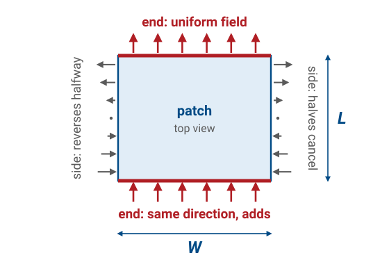
Along each end the field is uniform, and both ends point the same way, so they add.
Along each side the field reverses halfway, so the two halves cancel.
The beam points broadside, 5 to 8 dBi, typically 6.
A rectangle has four edges, and the field fringes past all of them. What decides whether an edge radiates is how the field varies along it.
The standing wave runs along \(L\). Along each of the two ends, which are \(W\) long, the field has the same strength and direction everywhere, so the whole edge radiates in phase, like a slot \(W\) long. The two ends are called the radiating edges, and the patch is modeled as two slots a distance \(L\) apart.
Along each of the two sides, which are \(L\) long, the field follows the standing wave: outward near one end, zero at the middle, and inward near the other end. The two halves of each side are equal and opposite, so broadside their contributions cancel. These are the non-radiating edges. They are not perfectly silent off broadside, and they are the main source of the patch’s cross-polarized radiation, but the pattern comes from the two ends.
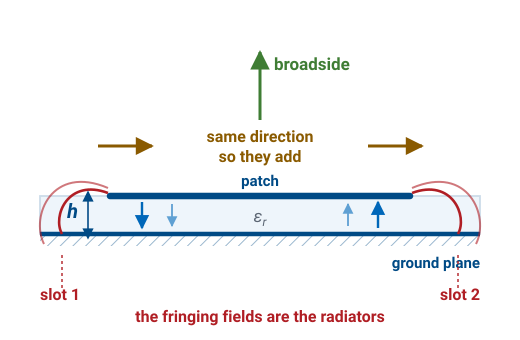
The side view shows why the two ends add even though the field between the plates points down at one end and up at the other. Decompose each fringing field into a vertical and a horizontal part: the vertical parts at the two ends are opposite and cancel in the far field, while the horizontal parts point the same way and add.
The two-slot model accounts for both the shape of the pattern and its direction. The two slots are equidistant from any point straight overhead, so the beam always points broadside, and the ground plane suppresses the back hemisphere. Two slots about a quarter of a free-space wavelength apart cannot form a narrow beam, and the radiation integral of Lesson 6 puts numbers on that.
Lesson 6 integrated a current on a wire. Here the source is a field in an opening, and the equivalence principle trades that field for an equivalent magnetic surface current. Over an opening in a ground plane, with \(\hat{\mathbf n}\) the outward normal and \(\mathbf{E}_a\) the field in the opening,
where the 2 is the ground plane’s image, as it was for the monopole in Lesson 12. The magnetic current goes into the same integral \(\mathbf{J}\) did, and its radiation vector is written \(\mathbf{L}\):
which is Lesson 6’s \(U\) with \(\mathbf{L}/\eta_0\) in place of \(\mathbf{N}\).
Put the patch in the \(xy\)-plane with its radiating edges along \(y\), a distance \(L_e = L + 2\Delta L \approx \lambda_d/2\) apart along \(x\). The horizontal fringing field is \(E_0\ \hat{\mathbf x}\) at both edges, over a strip \(h\) wide and \(W\) long, so each edge carries \(\mathbf{M} = -2E_0\ \hat{\mathbf y}\). With \(\hat{\mathbf r}\cdot\mathbf{r}' = x'\sin\theta\cos\phi + y'\sin\theta\sin\phi\), the integral along each edge gives a slot factor, and the two edges give a two-element array factor, as the source and its image did in Lesson 12:
with \(X = \tfrac{kW}{2}\sin\theta\sin\phi\) and \(Z = \tfrac{kL_e}{2}\sin\theta\cos\phi\). Projecting \(\hat{\mathbf y}\) onto the far-field directions gives \(L_\theta = L_y\cos\theta\sin\phi\) and \(L_\phi = L_y\cos\phi\), so
Every factor is 1 at \(\theta = 0\), which is why the beam is broadside at every size. In the E-plane, \(\phi = 0\), only \(\cos^2 Z\) varies, and with \(L_e = 0.25\lambda_0\) for the FR-4 design it is still 0.51 at the horizon: the E-plane never falls 3 dB above the ground plane. In the H-plane, \(\phi = 90^\circ\), the pattern is \(\cos^2\theta\ (\sin X/X)^2\), with a half-power beamwidth of \(82^\circ\). Integrating \(U\) over the upper hemisphere gives a directivity of 4.06, or \(6.1\) dBi, which is the “typically 6” above.
Sizing a Patch
\(L\) sets the frequency: a 1% error in \(L\) moves it 1%, about the whole bandwidth.
\(W\) sets the edge resistance and the efficiency.
\(\Delta L\) is the fringing correction; omitting it detunes the patch.
The dimensions matter for three reasons.
The length sets the frequency. The patch resonates when \(L\) is half a wavelength in the substrate, so the resonant frequency is inversely proportional to \(L\): a length 1% too long resonates 1% low. A patch’s whole bandwidth is only one or two percent, so the length has to be right to a fraction of a percent. That is also why the fringing correction matters. The fringing field extends each end by \(\Delta L\), which is a few percent of \(L\), so a patch etched to the full \(\lambda_d/2\) resonates below \(f_r\) by more than its own bandwidth and is mismatched at the design frequency.
The width sets the impedance and the efficiency. Each radiating edge is a slot \(W\) long, and a longer slot radiates more easily, so a wider patch has a lower edge resistance and radiates more of its power before it is lost in the substrate. Too wide, and the patch can resonate across its width as well. The width formula is the standard compromise.
The overall size decides where the patch fits. A patch on a high-permittivity substrate is smaller, which matters in a handset and matters more in an array, where the elements sit about half a free-space wavelength apart and each one has to fit in its cell. Shrinking the patch narrows its bandwidth, as the frames after the worked example show.
Here \(\varepsilon_{\text{eff}}\) is the permittivity the wave actually sees: part of the field runs through the substrate and part through the air above it, so \(\varepsilon_{\text{eff}}\) lies between 1 and \(\varepsilon_r\). The two intermediate closed forms are Hammerstad curve fits to measured microstrip behavior rather than derivations, so we use them as design equations and check the result in a solver:
Worked Example — a 2.45 GHz Patch on FR-4
Take \(\varepsilon_r = 4.4\), \(h = 1.6\ \text{mm}\), \(f_r = 2.45\ \text{GHz}\), so \(c/2f_r = 61.2\ \text{mm}\).
Width. \(W = 61.2\sqrt{2/5.4} = 61.2(0.609) = 37.3\ \text{mm}\).
Effective permittivity. \(12h/W = 12(1.6)/37.3 = 0.515\), so \(\varepsilon_{\text{eff}} = 2.70 + 1.70(1.515)^{-1/2} = 2.70 + 1.38 = 4.08\).
Edge extension. With \(W/h = 23.3\), \(\Delta L/h = 0.412(4.381)(23.55)/[(3.823)(24.09)] = 0.462\), so \(\Delta L = 0.74\ \text{mm}\).
Length. \(L = 61.2/\sqrt{4.08} - 2(0.74) = 30.3 - 1.5 = 28.8\ \text{mm}\).
The design is a \(37 \times 29\ \text{mm}\) rectangle of copper, which is the size of the Wi-Fi antenna in a typical laptop or access point.
Patch Bandwidth
Bandwidth rises with \(h/\lambda_0\) and falls with \(\varepsilon_r\).
A higher \(\varepsilon_r\) shrinks the patch and narrows its bandwidth.
At 2.45 GHz on 1.6 mm: \(\varepsilon_r = 2.2\) gives \(48 \times 40\) mm at 1.5%.
\(\varepsilon_r = 10.2\) gives \(26 \times 19\) mm at 0.6%.
A high-\(Q\) cavity is a narrowband cavity, and a patch is a very high-\(Q\) cavity. Moving from \(\varepsilon_r = 2.2\) to \(10.2\) reduces the patch area by a factor of four and the bandwidth by a factor of two and a half. The formula gives the bandwidth for VSWR \(\le 2\), the same bar we read off a trace in Lesson 10.
“High-\(Q\)” is the quantity of Lesson 3: the energy stored in the resonator against the energy it radiates per radian of a cycle, and at VSWR \(\le 2\) a single resonance holds over a fractional bandwidth of \(1/(Q\sqrt2)\). Both halves of \(Q\) can be read off the cavity. With a voltage \(V\) between patch and ground at the two ends, the field there is \(V/h\), the standing wave averages its square to half over the length, and at resonance the magnetic energy equals the electric:
Each radiating edge is a slot with \(V\) across it. Integrating the slot’s pattern over the half-space gives the power it radiates as \(\tfrac12 V^2 G_1\), and for \(W\) well under a wavelength its radiation conductance is \(G_1 \approx W^2/90\lambda_0^2\). The two edges also couple, which adds a mutual conductance \(G_{12}\); for the FR-4 design \(G_1 = 0.97\ \text{mS}\) and \(G_{12} = 0.59\ \text{mS}\). So
and \(1/(65\sqrt2) = 1.09\%\), against \(1.12\%\) from the closed form. The same calculation gives \(1.57\%\) and \(0.58\%\) for the other two boards. The closed form is this \(Q\) fitted into one line, and the physics is in the fraction: the stored energy grows as \(\varepsilon_r/h\), so a thin, high-permittivity board stores a lot of energy for what it radiates.
Thickening the board is the direct way to widen the band, and it has a limit. Past about \(h = 0.05\lambda_0\), a growing share of the power travels along the board as a surface wave, guided inside the dielectric slab the way light is guided in a fiber, until it scatters from the board’s edge. That power is lost to the patch’s beam.
Where to Tap the Standing Wave
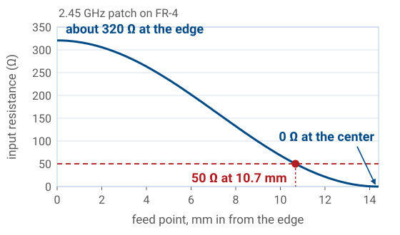
The voltage is largest at the ends and zero at the center.
So the input resistance falls from about \(320\ \Omega\) at the edge to zero.
\(50\ \Omega\) lies \(10.7\) mm in from the edge of our design.
Feeding a patch is an impedance-matching problem, and the standing wave solves it. At the radiating edge the voltage between patch and ground is at its maximum and the current is near zero, so the impedance is high: a few hundred ohms. At the center the voltage is zero and the current is at its maximum, so the impedance is zero, a virtual short.
Both numbers come from the standing wave and the power it radiates. The patch radiates \(P_{\text{rad}} = V^2(G_1 + G_{12})\) from the bandwidth frame, whatever point feeds it, and a feed a distance \(y_0\) in from the radiating edge sees the local voltage \(V\cos(\pi y_0/L)\). A resistance is a voltage squared over twice the power it delivers, so
Somewhere between edge and center it passes through \(50\ \Omega\), and that is where we connect the feed. For the \(2.45\ \text{GHz}\) FR-4 design, \(G_1 + G_{12} = 1.56\ \text{mS}\) gives \(R_{\text{edge}} = 321\ \Omega\), and \(\cos^2(\pi y_0/L) = 50/321\) puts the feed \(10.7\ \text{mm}\) in from the edge, 37% of the way to the center. Substrate loss lowers the edge resistance of a real FR-4 patch, so the measured point sits somewhat closer to the edge; a solver or a trim on the bench finds it.
Three Ways to Feed a Patch
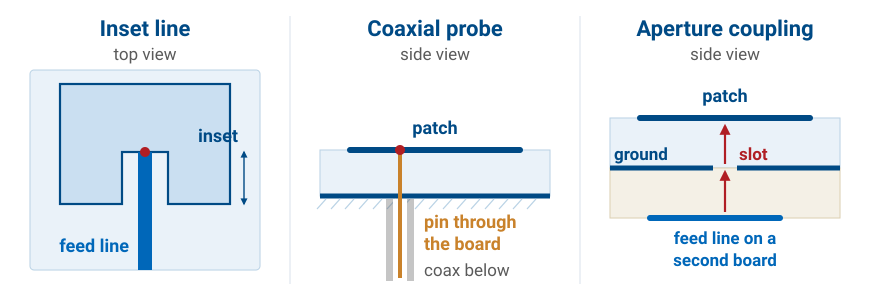
Inset line: notches let a printed line reach the \(50\ \Omega\) point.
Coaxial probe: a pin from below touches the patch at that point.
Aperture coupling: a line on a second board couples through a ground-plane slot.
All three feeds connect to the same resonator at, or near, the same \(50\ \Omega\) point; they differ in how they get there.
The inset line is printed in the same etch step as the patch. Two notches cut into the radiating edge let the microstrip line reach in to the \(50\ \Omega\) point without touching the patch on either side. It is the least expensive feed and keeps everything on one side of the board, but the feed line is itself a conductor above the ground plane, and it radiates a little.
The coaxial probe comes up from behind. The coax’s outer conductor is soldered to the ground plane, and its center pin passes through a hole in the substrate and is soldered to the patch at the \(50\ \Omega\) point. The feed is behind the ground plane, so it does not radiate, but every element needs a drilled and soldered connection.
Aperture coupling uses two circuit boards. The patch sits on the top board. The ground plane is between the two boards and has a small slot cut in it under the patch. The feed line runs on the bottom board, below the ground plane, and crosses under the slot, and the field of the line couples up through the slot to the patch. Nothing touches the patch. The ground plane shields the feed network from the radiating side, and the slot’s own resonance widens the band, but the design needs a second layer.
The Patch Designer
Pick a frequency, a substrate, and a thickness, and the designer sizes the patch with the design set above. The top view is drawn to scale inside the dashed outline of the same patch built in air, so the difference between the two is the size reduction the substrate provides. The shading along the patch is the standing wave, strongest at the two radiating edges and zero at the center, and the inset feed reaches in to the \(50\ \Omega\) point.
The VSWR curve shows the bandwidth. Step \(\varepsilon_r\) up the list and the dip narrows; increase the thickness and it widens again. The length error control etches the patch longer or shorter than the design. At \(+5\%\), about the size of the \(2\Delta L\) correction for the FR-4 design, the resonance moves below the band and the VSWR at the design frequency climbs past 5. That is why the length has to be right to a fraction of a percent.
The patterns are the two-slot model. No control moves the beam off broadside, because the two radiating edges always add in phase along the normal. The model assumes an infinite ground plane, so the E-plane stays broad out to the horizon; a real, finite ground plane rolls it off and puts a few dB of radiation behind the board. The VSWR curve treats the patch near resonance as a parallel resonant circuit matched at its own resonant frequency, with its \(Q\) set so that the VSWR \(\le 2\) band equals the closed-form bandwidth.
Why Patches Become Array Elements
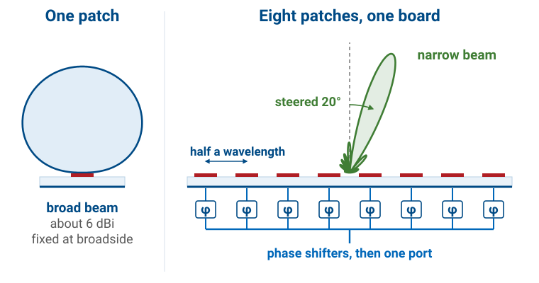
One patch is a 6 dBi element with a broad beam, too little gain for a radar.
Many identical patches etch in one step, and phase shifters steer their combined beam.
Identical elements are what an array needs. The same etch step that makes one patch makes a whole row of them, along with the printed lines that feed them, and every element comes out flat, light, conformal, and the same as its neighbors. Put a phase shifter behind each element and the array’s beam can be pointed electronically, with nothing on the board moving. The PHASER array we use in Module 3 is a row of eight patches, half a wavelength apart, each behind its own phase shifter. In Lesson 16 the patch pattern from this lesson becomes the element factor that multiplies the array factor, which is why the narrow array beam in the figure still sits inside the broad single-patch beam.
The Slot Antenna
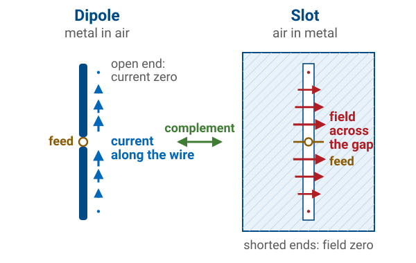
A slot is a half-wave slit in a metal sheet, fed at the middle.
It is the complement of a dipole: metal where the dipole is air.
Its shorted ends force the field to zero; it peaks at the feed.
A slot is the patch’s idea turned around. The two edges of the slit are two conductors facing each other across a narrow gap, so the slit is a short transmission line, and the metal at each end of the slit shorts it. A wave launched at the feed reflects from both shorted ends, and when the slit is half a wavelength long the reflections reinforce and the slot resonates. A short forces the voltage to zero, so the field across the gap is zero at the two ends and largest at the center, where the feed is. That is the mirror of the dipole, whose open ends force the current to zero.
It also explains the slot’s high input impedance. The feed sits where the voltage across the gap is largest and the current is smallest, and the ratio of the two is large: a few hundred ohms. Babinet’s principle puts a number on it.
Babinet’s principle relates complementary structures, and that one relation carries the dipole results of Lesson 7 over to the slot. Three consequences matter, and students most often get the third one backwards. The slot is also flush: nothing protrudes, so it can sit on a supersonic airframe.
Consequences of Complementarity
The impedance inverts: a \(73\ \Omega\) dipole corresponds to a \(487\ \Omega\) slot.
The reactance flips sign: \(73 + j42.5\ \Omega\) becomes \(364 - j212\ \Omega\).
The polarization rotates: the slot’s electric field runs across the cut, so a horizontal slot radiates a vertically polarized field.
With \(\eta_0 = 377\ \Omega\), \(\eta_0^2/4 = 3.553\times10^{4}\ \Omega^2\), and the resonant slot is \(3.553\times10^{4}/73 = 487\ \Omega\); texts that quote “about 485” are rounding the same result. A low-impedance dipole is a high-impedance slot, and feeding one from \(50\ \Omega\) needs a matching transformer. Inverting a complex impedance flips the sign of its imaginary part, so an inductive dipole is a capacitive slot — but since the reactance crosses zero at the same length either way, a slot resonates at the same electrical length its complementary dipole does.
Babinet’s relation comes from duality. Maxwell’s equations in free space keep their form if every \(\mathbf{E}\) is replaced by \(\eta_0\mathbf{H}\) and every \(\mathbf{H}\) by \(-\mathbf{E}/\eta_0\), and trading metal for air on the sheet trades the boundary conditions the same way. So on each side of the sheet the slot’s electric field has the shape of the dipole’s magnetic field. That is the polarization result: the dipole’s \(\mathbf{H}\) circles the wire, so the slot’s \(\mathbf{E}\) circles the slot’s axis and crosses the cut.
The impedance follows at the terminals. The dipole’s current is \(\oint\mathbf{H}\cdot d\mathbf{l}\) around the wire, half of it on each side of the sheet, and the dual of the half path above the sheet is the path across the slot, so the slot’s voltage is \(\eta_0\) times half the dipole’s current. The same step in reverse gives the slot’s current from the dipole’s voltage:
The two factors of 2 are the two sides of the sheet: the dipole’s current links the magnetic field on both sides, while the slot’s voltage is taken across the gap on one.
What 487 Ω Means
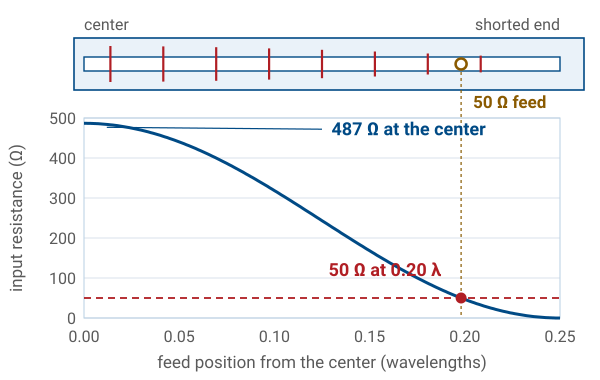
Center-fed on \(50\ \Omega\), a slot reflects 66% of its power: VSWR 9.7.
Feeding toward a shorted end lowers the resistance: \(50\ \Omega\) is \(0.20\lambda\) from center.
A waveguide slot needs no match: its offset sets its power.
A center-fed resonant slot presents about \(487\ \Omega\), and on a \(50\ \Omega\) line that is a reflection coefficient of
so 66% of the power reflects and the VSWR is 9.7. This is the short dipole’s problem from Lesson 7 in the other direction: there the resistance was far too low, here it is far too high, and either way the slot must be matched before it is useful on coax.
The usual match is the one the patch uses: move the feed. The field across the gap is largest at the center and falls to zero at the shorted ends, and the input resistance falls with the square of that field,
where \(x\) is the distance of the feed from the center. The resistance crosses \(50\ \Omega\) at \(x = 0.20\lambda\), about \(0.05\lambda\) from the shorted end. A quarter-wave transformer or a lumped matching network at the center feed works too.
Two consequences follow for real installations. A cavity-backed slot radiates from one side only, so for the same gap voltage it radiates about half the power, and its resistance roughly doubles, toward \(1\ \text{k}\Omega\) in the ideal case, which makes the match more important, not less. And a high resistance means a high voltage across the gap for a given power,
so \(100\ \text{W}\) into \(487\ \Omega\) puts about \(310\ \text{V}\) peak across the slot, against \(70\ \text{V}\) on a \(50\ \Omega\) line. At altitude, where air breaks down at lower voltage, that sets a power limit on airborne slots.
In a waveguide slot array none of this is a problem. Each slot is fed by the guide’s own fields rather than by a coax, and its offset from the centerline sets how much of the guided power it takes, so there is nothing to match slot by slot.
Slots in Service
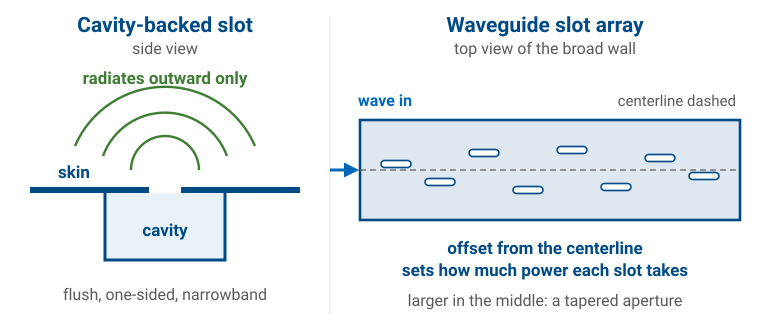
Cavity-backing makes a slot one-sided and flush: the standard skin antenna.
Backing narrows the band from 10 to 20% to a few percent.
A waveguide slot array machines the amplitude taper into the wall.
A slot in a sheet radiates on both sides, which is rarely acceptable on an airframe. Enclosing one side in a cavity gives a flush, one-sided, roughly hemispherical radiator.
The other major application is the waveguide slot array. A row of slots cut into the wall of a waveguide each couples out a little of the guided power: the spacing sets where the beam points, and the offset of each slot from the centerline sets how much power it takes.
The offset works because of where the wall current runs. In a guide \(a\) wide, the \(\text{TE}_{10}\) mode’s magnetic field along the guide varies as \(\sin(\pi x/a)\), with \(x\) measured from the centerline, and it drives a current across the broad wall with the same shape. A slot cut along the guide radiates only by interrupting that current, so a slot on the centerline, where the current is zero, takes no power, and moving it outward takes more. Adjacent slots sit half a guide wavelength apart, where the guide’s field has reversed, so they alternate sides of the centerline to reverse it back and radiate in phase.
Marine and airborne surveillance radars are built this way, and the result is a ready-made aperture distribution — the same taper theory Module 3 develops in Lesson 24, realized in the geometry of a machined wall.
The Horn Antenna
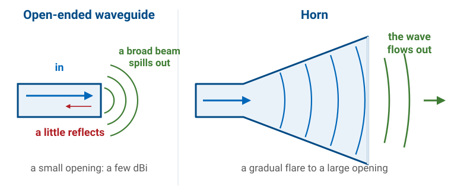
An open-ended waveguide radiates, but it is a fraction of a wavelength across: a broad beam, a few dBi.
Flaring the walls expands the mode and makes the impedance transition gradual.
The result is a large, well-illuminated aperture.
A waveguide carries a single mode efficiently, and an open end does radiate it, but poorly. The reflection is modest. At \(10\ \text{GHz}\) the WR-90 guide’s \(\text{TE}_{10}\) wave impedance is
and the step to \(377\ \Omega\) reflects \(\vert\Gamma\vert \approx 0.14\), about 2% of the power; fringing at the rim moves the measured value somewhat. The real problem is size. The opening is \(2.29 \times 1.02\ \text{cm}\), about a quarter of a square wavelength, so its beam is broad and its gain is only a few dBi. Flaring the walls grows the opening to many square wavelengths without an abrupt step anywhere. By the equivalence principle the flared opening is itself the source: we replace its field with the magnetic current \(\mathbf{M}\) of the two-slot frame and integrate.
This is the traveling-wave antenna of the lesson. Nothing in a horn sends the wave back: the flare widens slowly enough that the wave never meets an abrupt change, so it flows out through the mouth instead of reflecting. With no standing wave there is no sharp resonance, which is why a standard-gain horn covers its waveguide’s whole band, \(8.2\) to \(12.4\ \text{GHz}\) for WR-90, or about 40%, while a patch covers a few percent. That limit belongs to the waveguide, not the horn: the guide carries a single mode only between its first two cutoffs, and horns built on ridged guides for EMC testing cover \(1\) to \(18\ \text{GHz}\).
Gain Counts the Square Wavelengths That Work
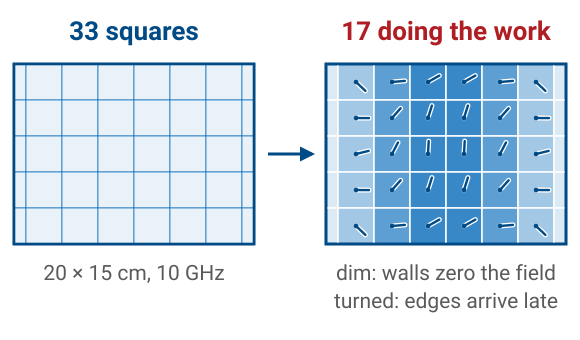
A horn’s walls and short flare leave 17 of 33 squares working: \(\eta_{\text{ap}} \approx 0.5\).
Why area gives gain comes from the beam it makes. Lesson 2’s pencil-beam rule says directivity is the whole sphere, \(4\pi\) steradians, divided by the beam’s solid angle, \(\theta_1\theta_2\). An opening \(a\) wide makes a beam about \(\lambda/a\) wide in that plane, as Lesson 2’s beamwidth widget showed when we widened the aperture, so an \(a \times b\) mouth makes a beam about \(\lambda/a\) by \(\lambda/b\). Its solid angle is \(\lambda^2/ab = \lambda^2/A\), and the sphere holds \(4\pi A/\lambda^2\) of them. Each square wavelength of mouth buys \(4\pi\) in gain. Both steps are approximate: a uniform aperture’s half-power beamwidth is \(0.886\lambda/a\), and the pencil-beam rule overcounts a real pattern by about as much, so the two roughly cancel. The radiation integral below gives \(4\pi A/\lambda^2\) exactly.
That count assumes every square works equally hard, which takes a field of the same strength and the same phase across the whole mouth. A horn’s does neither. The waveguide’s field is a cosine across the wide side, strong in the middle and zero at the walls, so the squares near the walls are dim. And the wave reaches the edges late, so their contributions are turned out of step with the center’s, as the next two frames show. \(A\) is the physical aperture area, and \(\eta_{\text{ap}}\) is the fraction of its squares that does the work. The figure counts them for the X-band horn of the worked example below: its \(20 \times 15\ \text{cm}\) mouth holds \(33\) square wavelengths at \(10\ \text{GHz}\), and with the optimum horn’s edge lags, \(\lambda/4\) in the E-plane and \(3\lambda/8\) in the H-plane, the efficiency is \(0.51\), so about \(17\) of them do the work. The horn’s geometry sets the 0.5; it is not a fudge factor.
Both losses are particular to the horn, and they come from what makes it a horn. The first is the walls. The mouth is fed by the waveguide’s \(\text{TE}_{10}\) mode, and a metal wall forces the electric field parallel to it to zero, so the field must fall to nothing at the two side walls. The squares beside them are dim however the horn is built, and that alone costs 19%. The second is the flare. The wave spreads from the apex on a sphere and the mouth is flat, so the edges are reached late, and nothing in a horn straightens the front except more length. Other apertures avoid one or both. An array of identical elements, the patches of the Module 3 board, can drive every element with the same amplitude and set every phase with a phase shifter, so every square works and \(\eta_{\text{ap}}\) approaches 1. A dish, in Lesson 14, makes the paths from its feed to its mouth equal, which removes the phase error, but its feed lights the rim weakly and spills some power past it, so reflectors land at 0.55 to 0.7. The horn pays both costs, the taper of the walls and the lag of the flare, and the optimum horn is the length at which the second stops being worth paying for.
The formula comes out of the radiation integral. Take an aperture of area \(A\) in a ground plane, with a field \(E_a(x', y')\ \hat{\mathbf x}\) across it, so that \(\mathbf{M} = -2\hat{\mathbf z}\times\mathbf{E}_a\) as in the two-slot frame. Straight ahead, at \(\theta = 0\), every phase factor in \(\mathbf{L}\) is 1, so the radiation vector is simply the sum of the field. The power leaving is the power flowing through the opening, which for a wide aperture is a plane wave’s:
and Lesson 2’s directivity is their ratio:
For a uniform field in phase the fraction is exactly \(A\), and \(D = 4\pi A/\lambda^2\). Any taper or phase error shrinks the numerator relative to the denominator, so the fraction divided by \(A\) is the aperture efficiency,
and a horn’s walls lose so little that its gain is its directivity. Lesson 2’s \(A_e = G\lambda^2/4\pi\) says the same thing from the receiving side: \(A_e = \eta_{\text{ap}}A\).
Counting squares also gives the frequency scaling. At \(20\ \text{GHz}\) the wavelength halves, so four times as many squares, \(133\), fit in the same opening, and the gain of a fixed horn rises by a factor of four, or 6 dB.
Worked Example — an X-Band Horn
A pyramidal horn with a \(20 \times 15\ \text{cm}\) aperture at \(10\ \text{GHz}\), with \(\eta_{\text{ap}} = 0.5\). Here \(\lambda = 3.0\ \text{cm}\) and \(A = 0.030\ \text{m}^2\), so
Next we find where its far field starts. The largest aperture dimension is the diagonal, \(D = 25\ \text{cm}\), so
Even a horn this small needs a \(4.2\ \text{m}\) range. The far-field distance is the constraint that most often sets the layout of a measurement range, and it is the same calculation we ran for the bench range in Lesson 11.
Phase Error in the Aperture
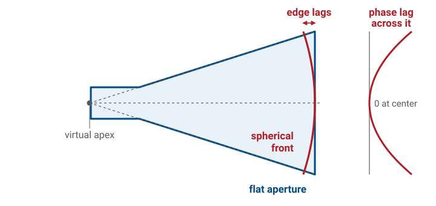
The wave leaves the apex on a spherical front, but the aperture is flat.
The edge is farther from the apex, so its field arrives late.
This quadratic phase error broadens the beam, fills the nulls, and reduces the gain.
Making the horn longer for the same aperture flattens the wavefront and reduces the error. The size of the lag is the geometry of Lesson 5. With the apex a flare length \(\ell\) behind a mouth \(D\) wide, the edge is \(\sqrt{\ell^2 + (D/2)^2}\) from the apex, and for \(D \ll \ell\)
which is Lesson 5’s \(\Delta = D^2/8r\), with the apex in place of a distant source. The far-field criterion holds \(\Delta\) to \(\lambda/16\) because a measurement must not distort the pattern. A horn accepts four times that and more, because it is trading the error against area, and the next frame shows where the trade balances. Setting \(\Delta = \lambda/4\) gives the widest E-plane mouth for a given length, \(D = \sqrt{2\lambda\ell}\).
The Horn’s Pattern
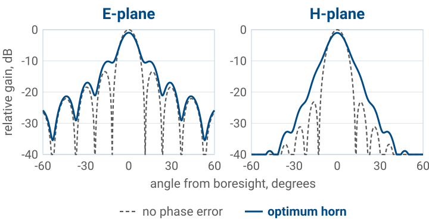
The peak drops about 1 dB in each plane.
The first nulls fill to about −11 dB, and the beam widens 6 to 15%.
The H-plane’s −23 dB sidelobes merge into a shoulder.
These are the X-band horn’s two principal-plane patterns, computed from the same aperture field as the working-squares figure: \(5\lambda\) across in the E-plane with a uniform field and an edge lag of \(\lambda/4\), and \(6.67\lambda\) across in the H-plane with the waveguide’s cosine and a lag of \(3\lambda/8\). Each pattern is the one-plane version of the aperture integral of the gain frame, the field summed across the mouth with the phase each point needs to reach a distant observer at angle \(\theta\), times the obliquity factor \((1+\cos\theta)/2\). The dashed curves are the same mouth with no phase error, and both are scaled to that curve’s peak.
The three effects the previous frame named are all visible. The peak is 0.97 dB lower in the E-plane and 1.0 dB lower in the H-plane, the phase efficiencies of 0.80 and 0.79 in decibels. The half-power beamwidth grows from \(10.1^\circ\) to \(10.7^\circ\) in the E-plane and to \(11.6^\circ\) in the H-plane. The nulls fill, because a null needs the contributions across the mouth to cancel exactly, and the lagging edges no longer have the phase that cancellation requires: the first null, a true zero for the ideal mouth, rises to \(-10.6\ \text{dB}\) in the E-plane and \(-11.8\ \text{dB}\) in the H-plane.
The dashed curves also show what the wall taper buys. The uniform E-plane has the familiar first sidelobe at \(-13.4\ \text{dB}\); the cosine H-plane’s is at \(-23\ \text{dB}\), the price of its dim edge squares paid back in a cleaner pattern. The horn’s phase error spends most of that, merging the H-plane sidelobes into a shoulder.
The Optimum Horn
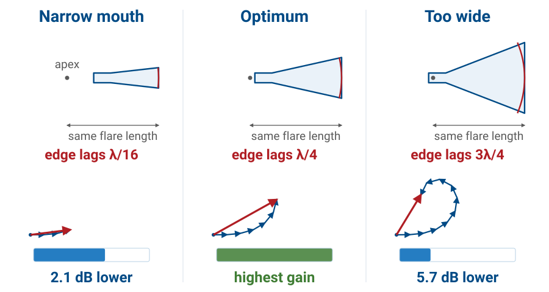
Same flare length, wider mouth: more area, more edge lag.
Past \(\lambda/4\) of edge lag, the edge strips cancel the center.
The flare length is the distance along the axis from the apex to the mouth. Hold it fixed and widen the mouth, and two things happen at once. The aperture grows, which raises the gain. But the edges of the mouth move farther from the apex than its center is, so the wave reaches them later, and that lag grows with the square of the width.
The arrows show why the lag matters. Split the mouth into narrow strips; each strip contributes to the field straight ahead, and its contribution is turned by its lag. Adding the contributions head to tail gives the total. A narrow mouth has few strips, all nearly in step: a short, straight chain. The optimum mouth has more strips, and the outer ones turn by up to a quarter wavelength, so the chain bends but still gains length. Past that, the outer strips turn so far that they point backward, and adding them makes the total shorter: the extra area costs gain instead of adding it. The optimum horn is the widest mouth that still helps, at a given length. A longer horn flattens the wavefront, lowers the lag at every width, and moves the optimum to a wider mouth and a higher gain; the price is length.
At the optimum, \(\eta_{\text{ap}} \approx 0.5\): the design gives up about half the aperture to keep the horn short enough to be practical.
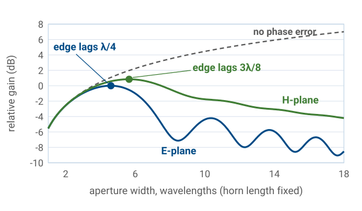
The plot is the same effect computed continuously, for a horn with a flare length of ten wavelengths, widening the mouth in one plane at a time; it is the aperture-efficiency ratio of the gain frame, evaluated with the lag \(D^2/8\ell\) across the mouth. The E-plane field is uniform across the aperture, and its gain peaks when the edge lags the center by \(0.26\lambda\), the textbook \(\lambda/4\). The H-plane field follows the waveguide’s cosine, which is weak at the edges, so the edges matter less and the peak comes later, at \(0.40\lambda\), which the textbook design rule rounds to \(3\lambda/8\). Past the peak the curve ripples as successive bands of the mouth alternately add and cancel.
At the peaks the phase error costs 22% of the gain in the E-plane and 23% in the H-plane. The cosine taper costs another 19%, from the same ratio with the phase error set aside:
Together, \(0.78 \times 0.77 \times 0.81 = 0.49\), which is where the horn’s aperture efficiency of about 0.5 comes from.
The Standard-Gain Horn
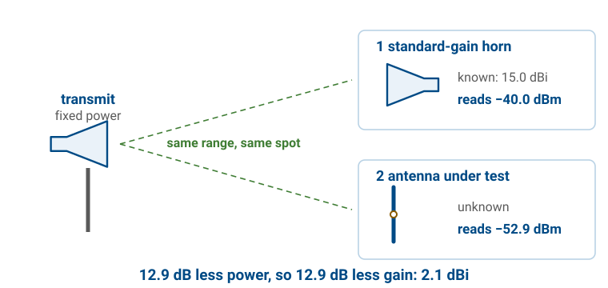
It is a horn built to the optimum design, with gain measured at the factory and tabulated across its band.
Its value is not performance but a known gain.
We used one in Lesson 11 as the reference whose \(15.0\ \text{dBi}\) we subtracted to find the gain of our own antenna. Its calibration was the only absolute gain in that measurement, and it is accurate to a few tenths of a dB because a horn’s gain can be calculated, not only measured. The field in its mouth is the waveguide’s known \(\text{TE}_{10}\) cosine with a known quadratic phase, so the aperture-efficiency ratio can be evaluated from the horn’s measured dimensions, and nothing in it resonates, so no feed-point detail or trimmed length enters. Calculation and calibration agree to a few tenths of a dB.
The figure is the gain-comparison method. With the transmitter fixed, the horn and then the antenna under test occupy the same receive spot. Everything else in the link, the power, the range, the cable, is the same for both, so the difference in received power in dB is the difference in gain. A dipole that reads \(12.9\ \text{dB}\) below a \(15.0\ \text{dBi}\) horn is \(2.1\ \text{dBi}\).
Choosing Among the Three
Patch |
Slot |
Horn |
|
|---|---|---|---|
Gain |
5–8 dBi |
2–5 dBi |
10–25 dBi |
Bandwidth |
1–5% |
10–20% |
about 40% |
Power |
low |
moderate |
high |
Integration |
printed |
flush in a skin |
bulky, 3-D |
Read it as three answers to three different design problems. To get an antenna onto a circuit board and copy it four hundred times, choose the patch. To put one on an airframe at Mach 2, choose the slot. To get 20 dBi with a gain trustworthy to a few tenths of a dB, choose the horn.
The fuller comparison:
Patch |
Slot |
Horn |
|
|---|---|---|---|
What radiates |
fringing fields at two edges |
the field across a cut |
a flared, illuminated opening |
Pattern |
broadside hemisphere, always |
dipole-like; one-sided if cavity-backed |
directive pencil or fan beam |
Gain |
5–8 dBi |
2–5 dBi |
10–25 dBi |
Bandwidth |
1–5 % (thin substrate) |
10–20 %; a few % cavity-backed |
its waveguide’s band, about 40 % |
Power handling |
low |
moderate |
high (waveguide-fed) |
Integration |
printed, planar, arrays etched in one step |
flush in an existing conducting skin |
bulky, 3-D, needs a waveguide feed |
Typical uses |
GPS, Wi-Fi, phased-array elements |
aircraft and missile skins, waveguide slot arrays for marine radar |
range references, reflector feeds, chamber sources |
Summary
Symbol / idea |
Meaning |
Number to keep |
|---|---|---|
\(L \approx \lambda_d/2\) |
patch resonates as a half-wave cavity in the dielectric |
shorten by \(2\Delta L\) |
\(\varepsilon_{\text{eff}}\) |
effective permittivity of the substrate and air |
between 1 and \(\varepsilon_r\) |
two-slot model |
patch radiates from the two fringing edges, in phase |
broadside, 5–8 dBi |
feed position |
\(R_{\text{in}}\) falls from \(R_{\text{edge}}\) at the edge to 0 at the center |
\(50\ \Omega\) about a third of the way in |
patch bandwidth |
rises with \(h/\lambda_0\), falls with \(\varepsilon_r\) |
1–5 %, few % typical |
\(Z_{\text{slot}} Z_{\text{dipole}} = \eta_0^2/4\) |
Babinet complementarity |
resonant slot \(487\ \Omega\) |
slot polarization |
field runs across the cut, not along it |
horizontal slot, vertical polarization |
\(G = \eta_{\text{ap}} 4\pi A/\lambda^2\) |
aperture gain |
horns \(\eta_{\text{ap}} \approx 0.5\) |
optimum horn |
shortest horn whose edge phase error is tolerable |
\(\lambda/4\) E-plane, \(3\lambda/8\) H-plane |
standard-gain horn |
calibrated reference for gain measurement |
the Lesson 11 reference |
Practice
Where This Is Going
Of the three, only the horn clears 10 dBi.
Lesson 14 goes after the rest: reflectors, Yagis, and arrays.
Each reaches a large electrical aperture by a different route, with different size and bandwidth.
Lesson 14 also closes Module 2, and it is the last new material before the midterm is due.
The patch is the one we will keep using. Module 3 builds on the idea that a hundred inexpensive, identical, low-gain elements can outperform one high-gain antenna, because we can steer the array electronically without moving anything. The element in that array is the patch we sized today, and its pattern becomes the element factor in Lesson 16.